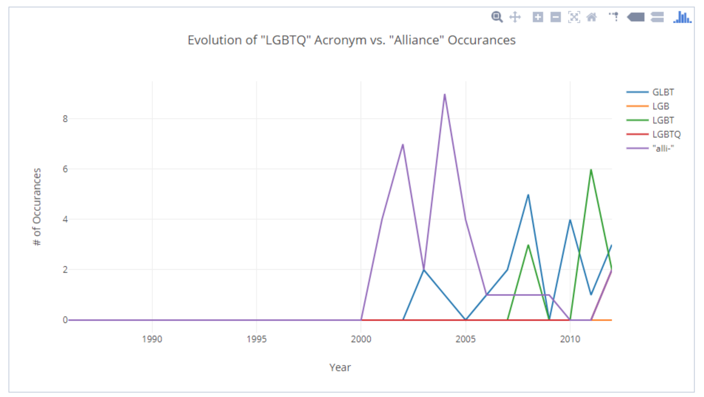

Beyond Primary Sources
Mackenzie Brooks
October 13, 2017
Beyond Primary Sources: Digital Archives in the DH Classroom
Mackenzie Brooks, Assistant Professor and Digital Humanities Librarian
Digital Archives in the Commonwealth Summit, October 13, 2017
DH curriculum
- DH 101 - Introduction to Digital Humanities
- DH 110 - Programming for Non-programmers
- DH 190 - Scholarly Text Encoding
- ???
Learning Outcomes
- Ability to integrate digitally driven research goals, methods, and media with discipline-specific inquiry.
- Ability to understand, analyze, and use data.
- Develop critical savvy for assessing sources and data.
- Ability to assess information and information technologies critically.
- Ability to work collaboratively.
Burdick, Anne, ed. Digital_humanities. Cambridge, Mass: MIT Press, 2012. https://mitpress.mit.edu/sites/default/files/titles/content/9780262018470_Open_Access_Edition.pdf
DH 101 v.1

DH 101 v.2

DH 190

HIST 295 Public History

DH 102 Data in the Humanities
- Unit 1: Text
- Unit 2: Network
- Unit 3: Space
DH 102 - Ring-tum Phi

DH 102 - Ring-tum Phi

DH 102 - cemetery database

DH 102 - cemetery database

DH 102 - Shenandoah index
digital literacies
- regular expressions
- zip files
- cloud storage
- file naming conventions